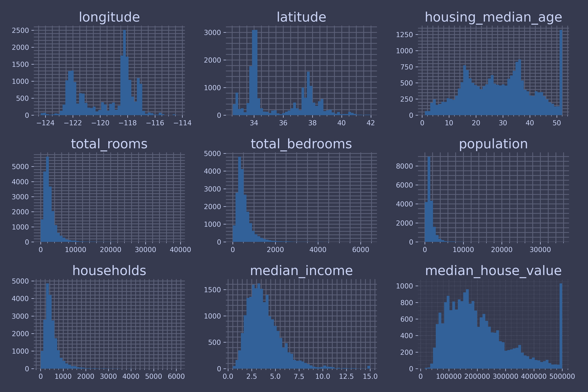
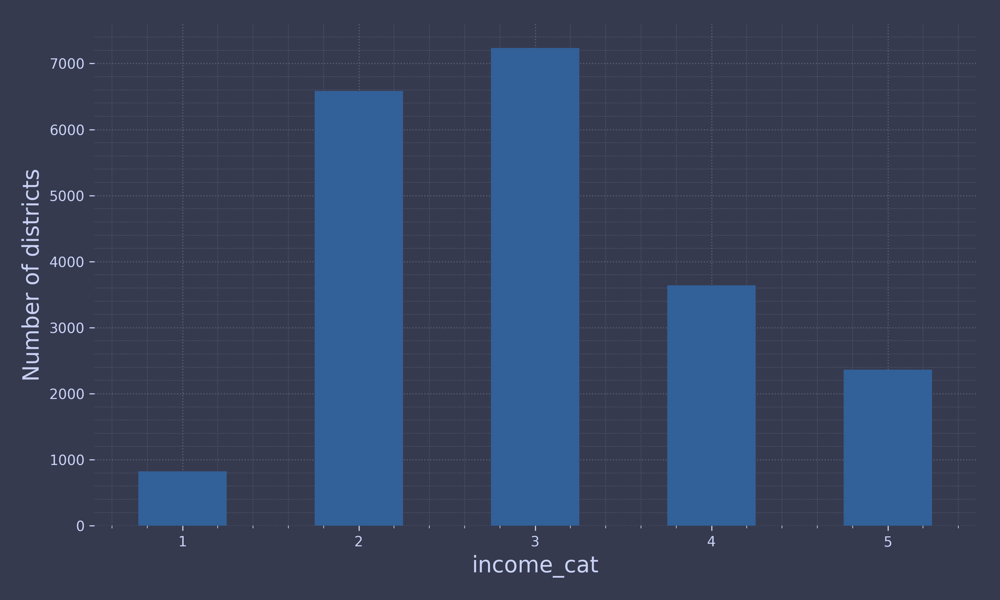
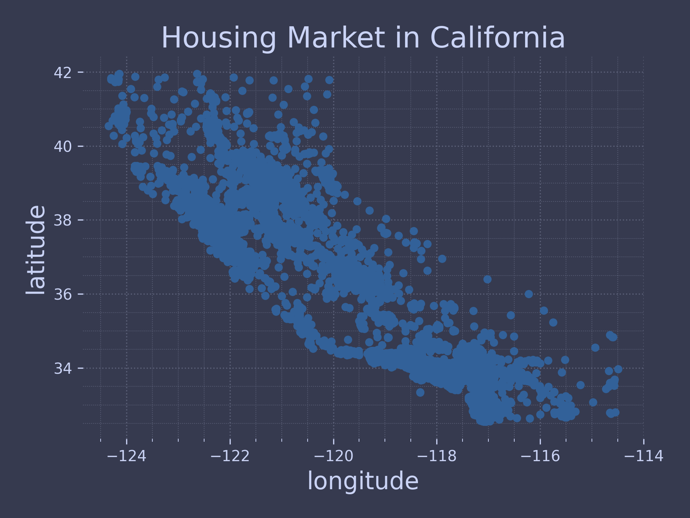
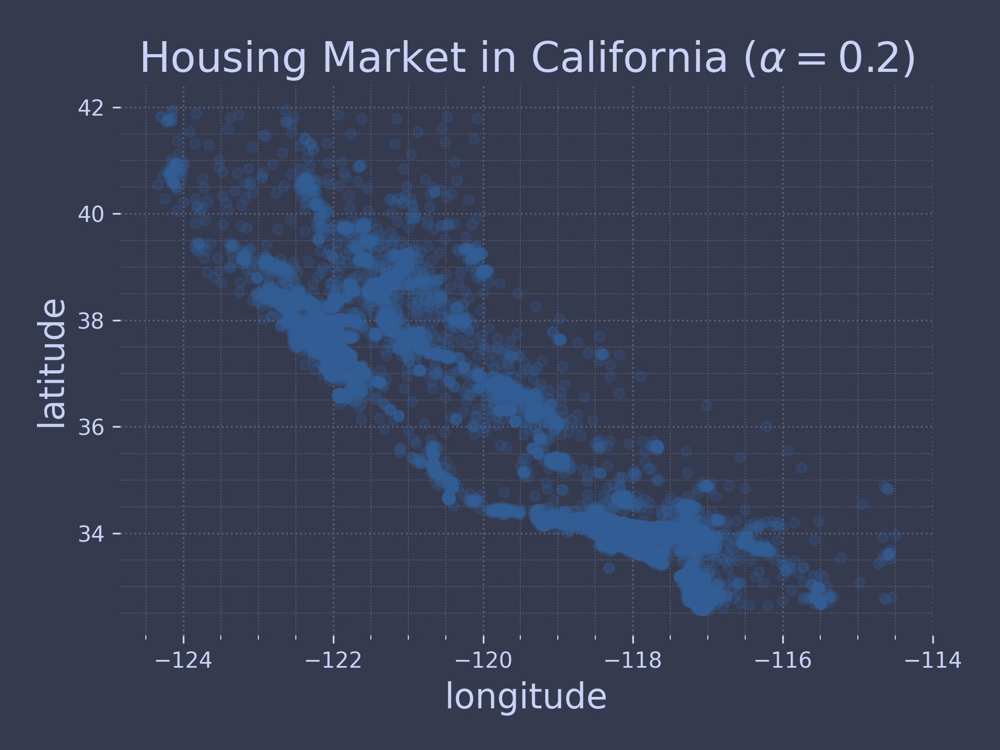
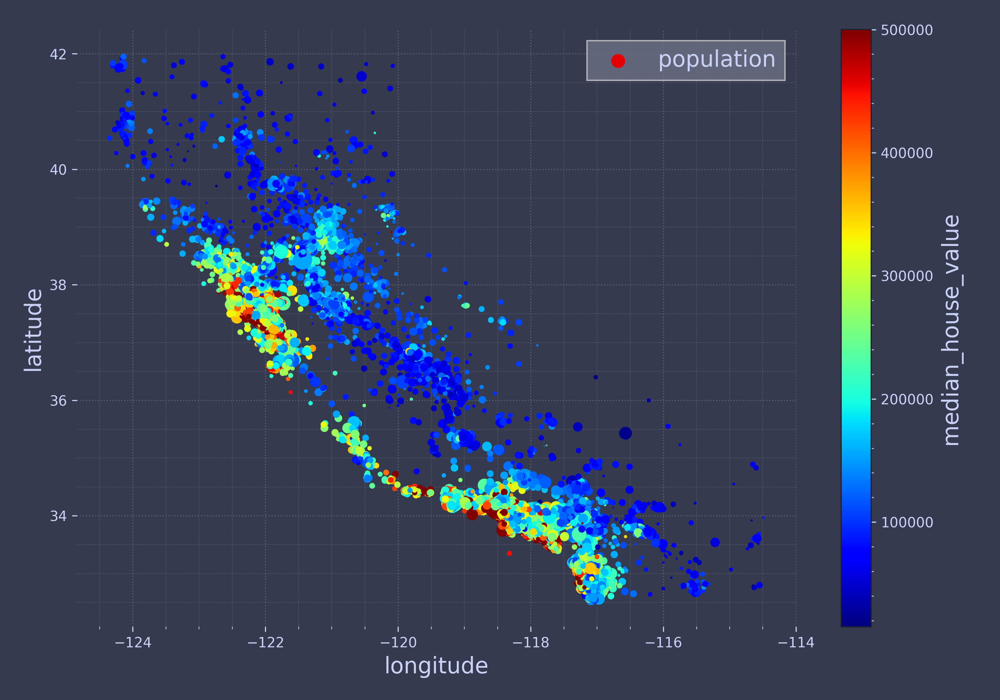
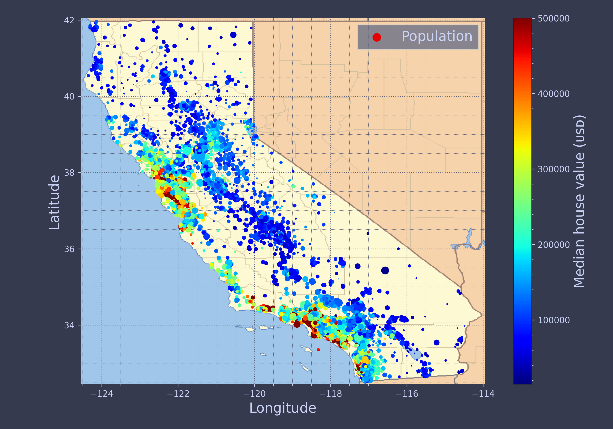
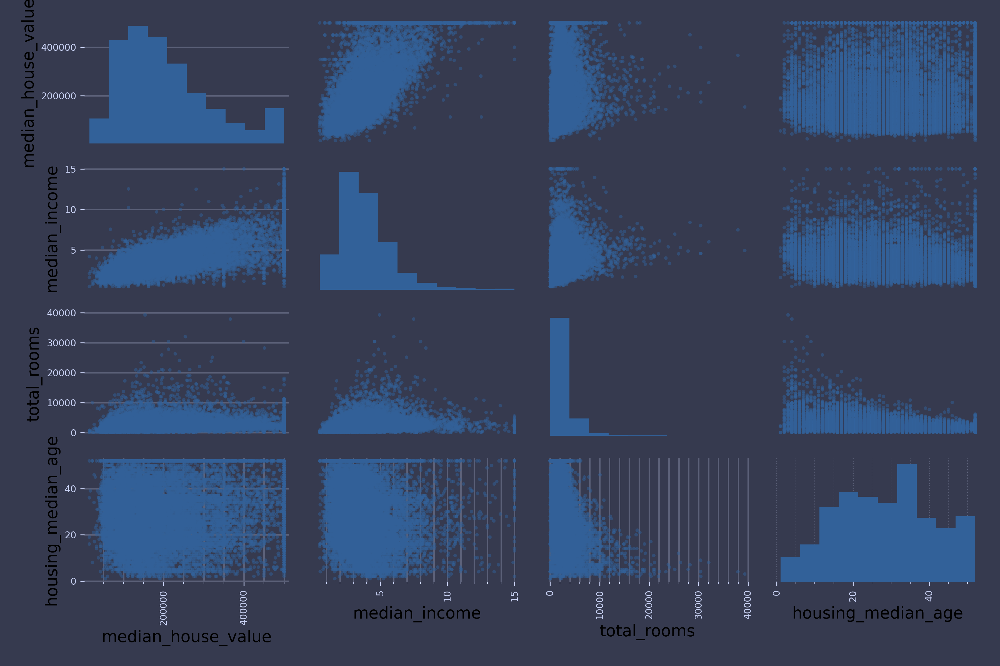
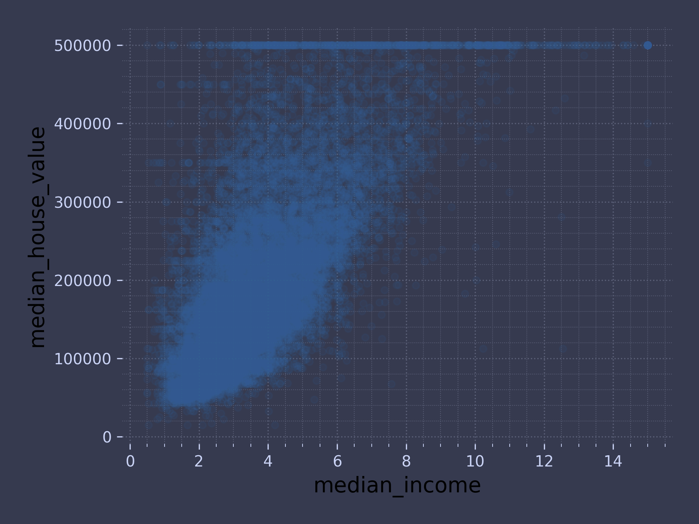
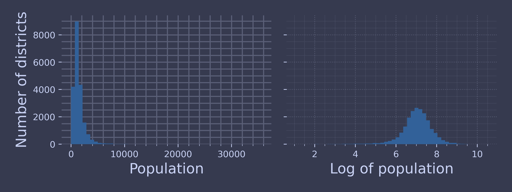
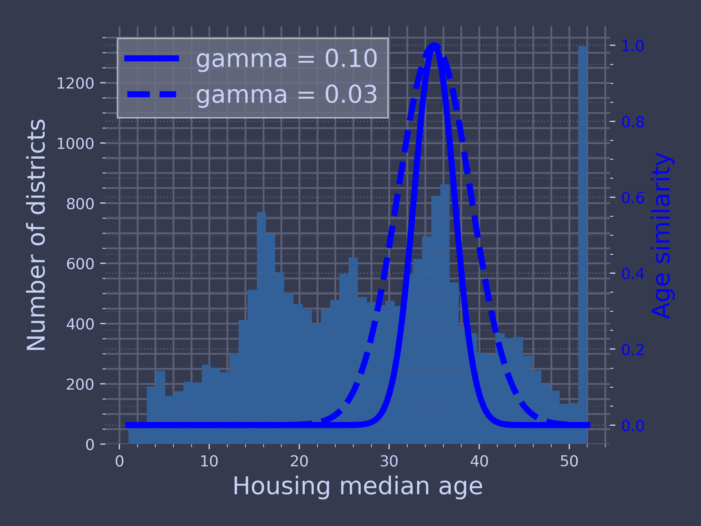

Code for Machine Learning and Data Science II End to End ML Project
Table of Contents
These are the code snippets used in End to End ML Project part of Machine Learning and Data Science II.
Introduction
Preamble
import matplotlib.pyplot as plt import ChalcedonPy as cp # Initialise ChalcedonPy cp.init(save_path="End-to-End-ML-Project", display_mode="web")
Download Initial Data
First lets load the necessary modules for downloading the data so we can work on it.
from pathlib import Path import pandas as pd # for dataframes import tarfile # read/write tar files # to access and download data from web import urllib.request from tabulate import tabulate # for table printing
Define a function called load_housing_data() to access and download the data, finally returning a read of it using pandas.
def load_housing_data(): # path to save the file tarball_path = Path("datasets/housing.tgz") # check if the path exists, if not create one if not tarball_path.is_file(): Path("datasets").mkdir(parents=True, exist_ok=True) url = "https://github.com/dTmC0945/L-MCI-BSc-Data-Science-II/raw/main/data/housing.tgz" urllib.request.urlretrieve(url, tarball_path) with tarfile.open(tarball_path) as housing_tarball: housing_tarball.extractall(path="datasets") return pd.read_csv(Path("datasets/housing/housing.csv"))
Now read the data and assign it to the value housing.
housing = load_housing_data()
Let's have a look at the data
print(housing.head())
longitude latitude ... median_house_value ocean_proximity 0 -122.23 37.88 ... 452600.0 NEAR BAY 1 -122.22 37.86 ... 358500.0 NEAR BAY 2 -122.24 37.85 ... 352100.0 NEAR BAY 3 -122.25 37.85 ... 341300.0 NEAR BAY 4 -122.25 37.85 ... 342200.0 NEAR BAY [5 rows x 10 columns]
Each row represents one district.
There are 10 attributes
- longitude,
- latitude,
- housingmedianage,
- totalrooms,
- totalbed rooms,
- population,
- households,
- medianincome,
- medianhousevalue,
- and oceanproximity.
To get more information about the data use the info() method.
print(housing.info())
<class 'pandas.core.frame.DataFrame'> RangeIndex: 20640 entries, 0 to 20639 Data columns (total 10 columns): # Column Non-Null Count Dtype --- ------ -------------- ----- 0 longitude 20640 non-null float64 1 latitude 20640 non-null float64 2 housing_median_age 20640 non-null float64 3 total_rooms 20640 non-null float64 4 total_bedrooms 20433 non-null float64 5 population 20640 non-null float64 6 households 20640 non-null float64 7 median_income 20640 non-null float64 8 median_house_value 20640 non-null float64 9 ocean_proximity 20640 non-null object dtypes: float64(9), object(1) memory usage: 1.6+ MB None
There seems to be some repetition on the ocean_proximity parameters. Let's have a bit more look into the data.
To get more information on it use the value_counts() method.
print(housing["ocean_proximity"].value_counts())
ocean_proximity <1H OCEAN 9136 INLAND 6551 NEAR OCEAN 2658 NEAR BAY 2290 ISLAND 5 Name: count, dtype: int64
Time to look at the the other fields using the describe() method which shows their numerical attributes.
print(housing.describe)
<bound method NDFrame.describe of longitude latitude housing_median_age total_rooms total_bedrooms population households median_income median_house_value ocean_proximity 0 -122.23 37.88 41.0 880.0 129.0 322.0 126.0 8.3252 452600.0 NEAR BAY 1 -122.22 37.86 21.0 7099.0 1106.0 2401.0 1138.0 8.3014 358500.0 NEAR BAY 2 -122.24 37.85 52.0 1467.0 190.0 496.0 177.0 7.2574 352100.0 NEAR BAY 3 -122.25 37.85 52.0 1274.0 235.0 558.0 219.0 5.6431 341300.0 NEAR BAY 4 -122.25 37.85 52.0 1627.0 280.0 565.0 259.0 3.8462 342200.0 NEAR BAY ... ... ... ... ... ... ... ... ... ... ... 20635 -121.09 39.48 25.0 1665.0 374.0 845.0 330.0 1.5603 78100.0 INLAND 20636 -121.21 39.49 18.0 697.0 150.0 356.0 114.0 2.5568 77100.0 INLAND 20637 -121.22 39.43 17.0 2254.0 485.0 1007.0 433.0 1.7000 92300.0 INLAND 20638 -121.32 39.43 18.0 1860.0 409.0 741.0 349.0 1.8672 84700.0 INLAND 20639 -121.24 39.37 16.0 2785.0 616.0 1387.0 530.0 2.3886 89400.0 INLAND [20640 rows x 10 columns]>
Allows the pretty print of the results.
import matplotlib.pyplot as plt housing.hist(bins=50, figsize=(12, 8)) cp.store_fig("attribute-histogram-plots", close=True)

Create a Set for Testing
import numpy as np # Define a function to shuffle and split data def shuffle_and_split_data(data, test_ratio): shuffled_indices = np.random.permutation(len(data)) test_set_size = int(len(data) * test_ratio) test_indices = shuffled_indices[:test_set_size] train_indices = shuffled_indices[test_set_size:] return data.iloc[train_indices], data.iloc[test_indices]
To use the data we can do the following
train_set, test_set = shuffle_and_split_data(housing, 0.2)
Lets see the sizes of the datasets
print("The size of the training set is:", len(train_set)) print("The size of the test data is:", len(test_set))
The size of the training set is: 16512 The size of the test data is: 4128
This will shuffle but because of shuffling the program will see all the data eventually which is not something good.
To avoid it we set a RNG seed to keep the shuffled indices constant.
np.random.seed(42)
Here is another method in which we can keep the split constant even if the dataset is refreshed.
from zlib import crc32 def is_id_in_test_set(identifier, test_ratio): return crc32(np.int64(identifier)) < test_ratio * 2**32 def split_data_with_id_hash(data, test_ratio, id_column): ids = data[id_column] in_test_set = ids.apply( lambda id_: is_id_in_test_set(id_, test_ratio)) return data.loc[~in_test_set], data.loc[in_test_set]
Unfortunately, the housing dataset does not have an identifier column. The simplest solution is to use the row index as the ID:
housing_with_id = housing.reset_index() # adds an `index` column train_set, test_set = split_data_with_id_hash(housing_with_id, 0.2, "index")
If you use the row index as a unique identifier, you need to make sure that new data gets appended to the end of the dataset and that no row ever gets deleted.
housing_with_id["id"] = housing["longitude"] * 1000 + housing["latitude"] train_set, test_set = split_data_with_id_hash(housing_with_id, 0.2, "id")
Scikit-Learn provides a few functions to split datasets into multiple subsets in various ways. An easy function is train_test_split()
from sklearn.model_selection import train_test_split train_set, test_set = train_test_split(housing, test_size=0.2, random_state=42)
To find the probability that a random sample of 1,000 people contains less than 48.5% female or more than 53.5% female when the population's female ratio is 51.1%, we use the binomial distribution.
The cdf() method of the binomial distribution gives us the probability that the number of females will be equal or less than the given value.
from scipy.stats import binom sample_size = 1000 ratio_female = 0.511 proba_too_small = binom(sample_size, ratio_female).cdf(485 - 1) proba_too_large = 1 - binom(sample_size, ratio_female).cdf(535) print(proba_too_small + proba_too_large)
0.10736798530930072
However, for the ones who prefer numerical results over explicit solutions, there is also the below method to achieve a similar result.
np.random.seed(42) samples = (np.random.rand(100_000, sample_size) < ratio_female).sum(axis=1) ((samples < 485) | (samples > 535)).mean()
0.1071
housing["income_cat"] = pd.cut(housing["median_income"], bins=[0., 1.5, 3.0, 4.5, 6., np.inf], labels=[1, 2, 3, 4, 5])
plt.xlabel("Income category") plt.ylabel("Number of districts") housing["income_cat"].value_counts().sort_index().plot.bar(rot=0, grid=True) cp.store_fig("housing-income-cat-bar-plot", close=True)

Now you are ready to do stratified sampling based on the income category. For this you can use Scikit-Learn’s StratifiedShuffleSplit class:
from sklearn.model_selection import StratifiedShuffleSplit splitter = StratifiedShuffleSplit(n_splits=10, test_size=0.2, random_state=42) strat_splits = [] for train_index, test_index in splitter.split(housing, housing["income_cat"]): strat_train_set_n = housing.iloc[train_index] strat_test_set_n = housing.iloc[test_index] strat_splits.append([strat_train_set_n, strat_test_set_n])
strat_train_set, strat_test_set = strat_splits[0]
strat_train_set, strat_test_set = train_test_split( housing, test_size=0.2, stratify=housing["income_cat"], random_state=42)
strat_test_set["income_cat"].value_counts() / len(strat_test_set)
income_cat 3 0.350533 2 0.318798 4 0.176357 5 0.114341 1 0.039971 Name: count, dtype: float64
def income_cat_proportions(data): return data["income_cat"].value_counts() / len(data) train_set, test_set = train_test_split(housing, test_size=0.2, random_state=42) compare_props = pd.DataFrame({ "Overall %": income_cat_proportions(housing), "Stratified %": income_cat_proportions(strat_test_set), "Random %": income_cat_proportions(test_set), }).sort_index() compare_props.index.name = "Income Category" compare_props["Strat. Error %"] = (compare_props["Stratified %"] / compare_props["Overall %"] - 1) compare_props["Rand. Error %"] = (compare_props["Random %"] / compare_props["Overall %"] - 1) (compare_props * 100).round(2)
Overall % Stratified % Random % Strat. Error % Rand. Error %
Income Category
1 3.98 4.00 4.24 0.36 6.45
2 31.88 31.88 30.74 -0.02 -3.59
3 35.06 35.05 34.52 -0.01 -1.53
4 17.63 17.64 18.41 0.03 4.42
5 11.44 11.43 12.09 -0.08 5.63
Time to drop income_cat() attribute to go back to the original state.
for set_ in (strat_train_set, strat_test_set): set_.drop("income_cat", axis=1, inplace=True)
Discover and Visualize the Data to Gain Insights
Before we start playing with the data it is a good habit to create a copy so as to not tamper with the training set.
housing = strat_train_set.copy()
Visualising Geographical Data
As data is a bunch of points in 2D space, it is benefical to plot it in a scatter plot.
housing.plot(kind = "scatter", x = "longitude", y = "latitude", title = "Housing Market in California") cp.store_fig("initial-visualisation-plot", close = True)

This might remind you a state in a country but it is currently not possible to see a pattern.
Let's set the alpha to 0.2 to see if it helps better.
housing.plot(kind = "scatter", x = "longitude", y = "latitude", title = r"Housing Market in California ($\alpha = 0.2$)", alpha = 0.2) cp.store_fig("initial-visualisation-plot-with-alpha", close = True)

Let's make it a bit more interesting and create a plot where the higher cluster areas would be coloured red and sparser places will be coloured colder as the value of the land is less.
housing.plot(kind="scatter", x="longitude", y="latitude", s=housing["population"] / 100, label="population", c="median_house_value", cmap="jet", colorbar=True, legend=True, sharex=False, figsize=(10, 7)) cp.store_fig("housing-prices-scatterplot", close = True)

Now we can see the housing prices are very much related to the location in this case closer to the ocean. To add a final addition let's superimpose the state map over it.
filename = "california.png" if not (IMAGES_PATH / filename).is_file(): homl3_root = "https://github.com/ageron/handson-ml3/raw/main/" url = homl3_root + "images/end_to_end_project/" + filename print("Downloading", filename) urllib.request.urlretrieve(url, IMAGES_PATH / filename) housing_renamed = housing.rename(columns={ "latitude": "Latitude", "longitude": "Longitude", "population": "Population", "median_house_value": "Median house value (ᴜsᴅ)"}) plot_settings(style = "slide") housing_renamed.plot( kind="scatter", x="Longitude", y="Latitude", s=housing_renamed["Population"] / 100, label="Population", c="Median house value (ᴜsᴅ)", cmap="jet", colorbar=True, legend=True, sharex=False, figsize=(10, 7)) california_img = plt.imread(IMAGES_PATH / filename) axis = -124.55, -113.95, 32.45, 42.05 plt.axis(axis) plt.imshow(california_img, extent=axis) store_fig("california-housing-prices-plot", style = "slide", close = True)

Looking for Correlations
Time to see if there is any correlation between the value of the houses and other parameters using pearsons correlation
corr_matrix = housing.corr(numeric_only=True) corr_matrix["median_house_value"].sort_values(ascending=False)
median_house_value 1.000000 median_income 0.688380 total_rooms 0.137455 housing_median_age 0.102175 households 0.071426 total_bedrooms 0.054635 population -0.020153 longitude -0.050859 latitude -0.139584 Name: median_house_value, dtype: float64
Another way to check for correlation between attributes is to use the pandas scattermatrix() function,
from pandas.plotting import scatter_matrix attributes = ["median_house_value", "median_income", "total_rooms", "housing_median_age"] scatter_matrix(housing[attributes], figsize=(12, 8)) cp.store_fig("scatter-matrix-plot", close=True) # extra code

The most promising attribute to predict the median house value is the median income,
housing.plot(kind="scatter", x="median_income", y="median_house_value", alpha=0.1, grid=True) cp.store_fig("income-vs-house-value-scatterplot", close=True)

Experimenting with Attribute Combinations
housing["rooms_per_house"] = housing["total_rooms"] / housing["households"] housing["bedrooms_ratio"] = housing["total_bedrooms"] / housing["total_rooms"] housing["people_per_house"] = housing["population"] / housing["households"]
corr_matrix = housing.corr(numeric_only=True) corr_matrix["median_house_value"].sort_values(ascending=False)
median_house_value 1.000000 median_income 0.688380 rooms_per_house 0.143663 total_rooms 0.137455 housing_median_age 0.102175 households 0.071426 total_bedrooms 0.054635 population -0.020153 people_per_house -0.038224 longitude -0.050859 latitude -0.139584 bedrooms_ratio -0.256397 Name: median_house_value, dtype: float64
Prepare the Data for Machine Learning Algorithms
It’s time to prepare the data for your Machine Learning algorithms. Instead of doing this manually, you should write functions for this purpose,
First revert to a clean training set and separate predictors and labels.
housing = strat_train_set.drop("median_house_value", axis=1) housing_labels = strat_train_set["median_house_value"].copy()
Data Cleaning
Not all data comes perfect for ML as some of them may contain NaN or 0 or some other value which you don't want ML algorithm to process.
null_rows_idx = housing.isnull().any(axis=1) housing.loc[null_rows_idx].head()
longitude latitude housing_median_age total_rooms total_bedrooms population households median_income ocean_proximity
14452 -120.67 40.50 15.0 5343.0 NaN 2503.0 902.0 3.5962 INLAND
18217 -117.96 34.03 35.0 2093.0 NaN 1755.0 403.0 3.4115 <1H OCEAN
11889 -118.05 34.04 33.0 1348.0 NaN 1098.0 257.0 4.2917 <1H OCEAN
20325 -118.88 34.17 15.0 4260.0 NaN 1701.0 669.0 5.1033 <1H OCEAN
14360 -117.87 33.62 8.0 1266.0 NaN 375.0 183.0 9.8020 <1H OCEAN
Let's look at three (3) options:
1 - Get rid of the corresponding districts
housing_option1 = housing.copy() housing_option1.dropna(subset=["total_bedrooms"], inplace=True) housing_option1.loc[null_rows_idx].head()
Empty DataFrame Columns: [longitude, latitude, housing_median_age, total_rooms, total_bedrooms, population, households, median_income, ocean_proximity] Index: []
2 - Get rid of the whole attribute
housing_option2 = housing.copy() housing_option2.drop("total_bedrooms", axis=1, inplace=True) housing_option2.loc[null_rows_idx].head()
longitude latitude housing_median_age total_rooms population households median_income ocean_proximity
14452 -120.67 40.50 15.0 5343.0 2503.0 902.0 3.5962 INLAND
18217 -117.96 34.03 35.0 2093.0 1755.0 403.0 3.4115 <1H OCEAN
11889 -118.05 34.04 33.0 1348.0 1098.0 257.0 4.2917 <1H OCEAN
20325 -118.88 34.17 15.0 4260.0 1701.0 669.0 5.1033 <1H OCEAN
14360 -117.87 33.62 8.0 1266.0 375.0 183.0 9.8020 <1H OCEAN
3 - Set the values to some value (zero, the mean, the median, etc.).
housing_option3 = housing.copy() median = housing["total_bedrooms"].median() housing_option3["total_bedrooms"].fillna(median, inplace=True) housing_option3.loc[null_rows_idx].head()
longitude latitude housing_median_age total_rooms total_bedrooms population households median_income ocean_proximity
14452 -120.67 40.50 15.0 5343.0 434.0 2503.0 902.0 3.5962 INLAND
18217 -117.96 34.03 35.0 2093.0 434.0 1755.0 403.0 3.4115 <1H OCEAN
11889 -118.05 34.04 33.0 1348.0 434.0 1098.0 257.0 4.2917 <1H OCEAN
20325 -118.88 34.17 15.0 4260.0 434.0 1701.0 669.0 5.1033 <1H OCEAN
14360 -117.87 33.62 8.0 1266.0 434.0 375.0 183.0 9.8020 <1H OCEAN
Scikit-Learn provides a handy class to take care of missing values: SimpleImputer.
Separating out the numerical attributes to use the "median" strategy
from sklearn.impute import SimpleImputer imputer = SimpleImputer(strategy="median")
create a copy of the data without the text attribute oceanproximity:
housing_num = housing.select_dtypes(include=[np.number])
can fit the imputer instance to the training data using the fit() method:
imputer.fit(housing_num)
we cannot be sure that there won’t be any missing values in new data after the system goes live, so it is safer to apply the imputer to all the numerical attributes:
print(imputer.statistics_)
[-118.51 34.26 29. 2125. 434. 1167. 408.
3.5385]
print(housing_num.median().values)
[-118.51 34.26 29. 2125. 434. 1167. 408.
3.5385]
use this “trained” imputer to transform the training set by replacing missing values with the learned medians:
X = imputer.transform(housing_num) # to see the name of the columns print(imputer.feature_names_in_)
['longitude' 'latitude' 'housing_median_age' 'total_rooms' 'total_bedrooms' 'population' 'households' 'median_income']
To convert this to pd dataframe:
housing_tr = pd.DataFrame(X, columns=housing_num.columns, index=housing_num.index)
housing_tr.loc[null_rows_idx].head()
longitude latitude housing_median_age total_rooms total_bedrooms population households median_income
14452 -120.67 40.50 15.0 5343.0 434.0 2503.0 902.0 3.5962
18217 -117.96 34.03 35.0 2093.0 434.0 1755.0 403.0 3.4115
11889 -118.05 34.04 33.0 1348.0 434.0 1098.0 257.0 4.2917
20325 -118.88 34.17 15.0 4260.0 434.0 1701.0 669.0 5.1033
14360 -117.87 33.62 8.0 1266.0 434.0 375.0 183.0 9.8020
imputer.strategy
median
housing_tr = pd.DataFrame(X, columns=housing_num.columns, index=housing_num.index) housing_tr.loc[null_rows_idx].head()
longitude latitude housing_median_age total_rooms total_bedrooms population households median_income
14452 -120.67 40.50 15.0 5343.0 434.0 2503.0 902.0 3.5962
18217 -117.96 34.03 35.0 2093.0 434.0 1755.0 403.0 3.4115
11889 -118.05 34.04 33.0 1348.0 434.0 1098.0 257.0 4.2917
20325 -118.88 34.17 15.0 4260.0 434.0 1701.0 669.0 5.1033
14360 -117.87 33.62 8.0 1266.0 434.0 375.0 183.0 9.8020
Time to drop some outliers.
from sklearn.ensemble import IsolationForest isolation_forest = IsolationForest(random_state=42) outlier_pred = isolation_forest.fit_predict(X) print(outlier_pred)
[-1 1 1 ... 1 1 1]
Handling Text and Categorical Attributes
Time to process text instead of numbers.
In this dataset, there is just one: the oceanproximity attribute. Let’s look at its value for the first 10 instances:
housing_cat = housing[["ocean_proximity"]] housing_cat.head(8)
ocean_proximity
13096 NEAR BAY
14973 <1H OCEAN
3785 INLAND
14689 INLAND
20507 NEAR OCEAN
1286 INLAND
18078 <1H OCEAN
4396 NEAR BAY
As ML likes numbers instead of text, convert these values to numbers using OrdinalEncoder class from Scikit-learn
from sklearn.preprocessing import OrdinalEncoder ordinal_encoder = OrdinalEncoder() housing_cat_encoded = ordinal_encoder.fit_transform(housing_cat)
Let's see the results
print(housing_cat_encoded[:8])
[[3.] [0.] [1.] [1.] [4.] [1.] [0.] [3.]]
And if we were to see the categories:
print(ordinal_encoder.categories_)
[array(['<1H OCEAN', 'INLAND', 'ISLAND', 'NEAR BAY', 'NEAR OCEAN'],
dtype=object)]
To stop from ML algorithm from treating the numbers too literally
from sklearn.preprocessing import OneHotEncoder cat_encoder = OneHotEncoder() housing_cat_1hot = cat_encoder.fit_transform(housing_cat)
type(housing_cat_1hot)
<class 'scipy.sparse._csr.csr_matrix'>
the output is a SciPy sparse matrix, instead of a NumPy array.
convert it to a dense array if needed by calling the toarray() method:
print(housing_cat_1hot.toarray())
[[0. 0. 0. 1. 0.] [1. 0. 0. 0. 0.] [0. 1. 0. 0. 0.] ... [0. 0. 0. 0. 1.] [1. 0. 0. 0. 0.] [0. 0. 0. 0. 1.]]
It is also possible to list categories using categoreis_ instance
cat_encoder = OneHotEncoder(sparse_output=False) housing_cat_1hot = cat_encoder.fit_transform(housing_cat) print(housing_cat_1hot)
[[0. 0. 0. 1. 0.] [1. 0. 0. 0. 0.] [0. 1. 0. 0. 0.] ... [0. 0. 0. 0. 1.] [1. 0. 0. 0. 0.] [0. 0. 0. 0. 1.]]
print(cat_encoder.categories_)
[array(['<1H OCEAN', 'INLAND', 'ISLAND', 'NEAR BAY', 'NEAR OCEAN'],
dtype=object)]
df_test = pd.DataFrame({"ocean_proximity": ["INLAND", "NEAR BAY"]}) pd.get_dummies(df_test)
ocean_proximity_INLAND ocean_proximity_NEAR BAY 0 True False 1 False True
print(cat_encoder.transform(df_test))
[[0. 1. 0. 0. 0.] [0. 0. 0. 1. 0.]]
df_test_unknown = pd.DataFrame({"ocean_proximity": ["<2H OCEAN", "ISLAND"]}) pd.get_dummies(df_test_unknown)
ocean_proximity_<2H OCEAN ocean_proximity_ISLAND 0 True False 1 False True
cat_encoder.handle_unknown = "ignore" print(cat_encoder.transform(df_test_unknown))
[[0. 0. 0. 0. 0.] [0. 0. 1. 0. 0.]]
print(cat_encoder.feature_names_in_)
['ocean_proximity']
print(cat_encoder.get_feature_names_out())
['ocean_proximity_<1H OCEAN' 'ocean_proximity_INLAND' 'ocean_proximity_ISLAND' 'ocean_proximity_NEAR BAY' 'ocean_proximity_NEAR OCEAN']
df_output = pd.DataFrame(cat_encoder.transform(df_test_unknown), columns=cat_encoder.get_feature_names_out(), index=df_test_unknown.index) df_output
ocean_proximity_<1H OCEAN ocean_proximity_INLAND ocean_proximity_ISLAND ocean_proximity_NEAR BAY ocean_proximity_NEAR OCEAN 0 0.0 0.0 0.0 0.0 0.0 1 0.0 0.0 1.0 0.0 0.0
Feature Scaling
from sklearn.preprocessing import MinMaxScaler min_max_scaler = MinMaxScaler(feature_range=(-1, 1)) housing_num_min_max_scaled = min_max_scaler.fit_transform(housing_num)
from sklearn.preprocessing import StandardScaler std_scaler = StandardScaler() housing_num_std_scaled = std_scaler.fit_transform(housing_num)
fig, axs = plt.subplots(1, 2, figsize=(8, 3), sharey=True) housing["population"].hist(ax=axs[0], bins=50) housing["population"].apply(np.log).hist(ax=axs[1], bins=50) axs[0].set_xlabel("Population") axs[1].set_xlabel("Log of population") axs[0].set_ylabel("Number of districts") cp.store_fig("long-tail-plot", close=True)

percentiles = [np.percentile(housing["median_income"], p) for p in range(1, 100)] flattened_median_income = pd.cut(housing["median_income"], bins=[-np.inf] + percentiles + [np.inf], labels=range(1, 100 + 1)) flattened_median_income.hist(bins=50) plt.xlabel("Median income percentile") plt.ylabel("Number of districts") cp.store_fig("long-tail-dist", close=True)

from sklearn.metrics.pairwise import rbf_kernel age_simil_35 = rbf_kernel(housing[["housing_median_age"]], [[35]], gamma=0.1)
ages = np.linspace(housing["housing_median_age"].min(), housing["housing_median_age"].max(), 500).reshape(-1, 1) gamma1 = 0.1 gamma2 = 0.03 rbf1 = rbf_kernel(ages, [[35]], gamma=gamma1) rbf2 = rbf_kernel(ages, [[35]], gamma=gamma2) fig, ax1 = plt.subplots() ax1.set_xlabel("Housing median age") ax1.set_ylabel("Number of districts") ax1.hist(housing["housing_median_age"], bins=50) ax2 = ax1.twinx() # create a twin axis that shares the same x-axis color = "#984ea3" ax2.plot(ages, rbf1, color=color, label="gamma = 0.10") ax2.plot(ages, rbf2, color=color, label="gamma = 0.03", linestyle="--") ax2.tick_params(axis='y', labelcolor=color) ax2.set_ylabel("Age similarity", color=color) plt.legend(loc="upper left") cp.store_fig("age-similarity-plot", close=True)

from sklearn.linear_model import LinearRegression target_scaler = StandardScaler() scaled_labels = target_scaler.fit_transform(housing_labels.to_frame()) model = LinearRegression() model.fit(housing[["median_income"]], scaled_labels) some_new_data = housing[["median_income"]].iloc[:5] # pretend this is new data scaled_predictions = model.predict(some_new_data) predictions = target_scaler.inverse_transform(scaled_predictions)
print(predictions)
[[131997.15275877] [299359.35844434] [146023.37185694] [138840.33653057] [192016.61557639]]
from sklearn.compose import TransformedTargetRegressor model = TransformedTargetRegressor(LinearRegression(), transformer=StandardScaler()) model.fit(housing[["median_income"]], housing_labels) predictions = model.predict(some_new_data)
print(predictions)
[131997.15275877 299359.35844434 146023.37185694 138840.33653057 192016.61557639]
Custom Transformers
from sklearn.preprocessing import FunctionTransformer log_transformer = FunctionTransformer(np.log, inverse_func=np.exp) log_pop = log_transformer.transform(housing[["population"]])
rbf_transformer = FunctionTransformer(rbf_kernel, kw_args=dict(Y=[[35.]], gamma=0.1)) age_simil_35 = rbf_transformer.transform(housing[["housing_median_age"]])
print(age_simil_35)
[[2.81118530e-13] [8.20849986e-02] [6.70320046e-01] ... [9.55316054e-22] [6.70320046e-01] [3.03539138e-04]]
sf_coords = 37.7749, -122.41 sf_transformer = FunctionTransformer(rbf_kernel, kw_args=dict(Y=[sf_coords], gamma=0.1)) sf_simil = sf_transformer.transform(housing[["latitude", "longitude"]])
print(sf_simil)
[[0.999927 ] [0.05258419] [0.94864161] ... [0.00388525] [0.05038518] [0.99868067]]
ratio_transformer = FunctionTransformer(lambda X: X[:, [0]] / X[:, [1]]) print(ratio_transformer.transform(np.array([[1., 2.], [3., 4.]])))
[[0.5 ] [0.75]]
from sklearn.base import BaseEstimator, TransformerMixin from sklearn.utils.validation import check_array, check_is_fitted class StandardScalerClone(BaseEstimator, TransformerMixin): def __init__(self, with_mean=True): # no *args or **kwargs! self.with_mean = with_mean def fit(self, X, y=None): # y is required even though we don't use it X = check_array(X) # checks that X is an array with finite float values self.mean_ = X.mean(axis=0) self.scale_ = X.std(axis=0) self.n_features_in_ = X.shape[1] # every estimator stores this in fit() return self # always return self! def transform(self, X): check_is_fitted(self) # looks for learned attributes (with trailing _) X = check_array(X) assert self.n_features_in_ == X.shape[1] if self.with_mean: X = X - self.mean_ return X / self.scale_
from sklearn.cluster import KMeans class ClusterSimilarity(BaseEstimator, TransformerMixin): def __init__(self, n_clusters=10, gamma=1.0, random_state=None): self.n_clusters = n_clusters self.gamma = gamma self.random_state = random_state def fit(self, X, y=None, sample_weight=None): self.kmeans_ = KMeans(self.n_clusters, n_init=10, random_state=self.random_state) self.kmeans_.fit(X, sample_weight=sample_weight) return self # always return self! def transform(self, X): return rbf_kernel(X, self.kmeans_.cluster_centers_, gamma=self.gamma) def get_feature_names_out(self, names=None): return [f"Cluster {i} similarity" for i in range(self.n_clusters)]
cluster_simil = ClusterSimilarity(n_clusters=10, gamma=1., random_state=42) similarities = cluster_simil.fit_transform(housing[["latitude", "longitude"]], sample_weight=housing_labels)
similarities[:3].round(2)
housing_renamed = housing.rename(columns={ "latitude": "Latitude", "longitude": "Longitude", "population": "Population", "median_house_value": "Median house value (ᴜsᴅ)"}) housing_renamed["Max cluster similarity"] = similarities.max(axis=1) housing_renamed.plot(kind="scatter", x="Longitude", y="Latitude", grid=True, s=housing_renamed["Population"] / 100, label="Population", c="Max cluster similarity", cmap="jet", colorbar=True, legend=True, sharex=False, figsize=(10, 7)) plt.plot(cluster_simil.kmeans_.cluster_centers_[:, 1], cluster_simil.kmeans_.cluster_centers_[:, 0], linestyle="", color="black", marker="X", markersize=20, label="Cluster centers") plt.legend(loc="upper right") cp.store_fig("district-cluster-plot", close=True)

Transformation Pipelines
Now let's build a pipeline to preprocess the numerical attributes:
from sklearn.pipeline import Pipeline num_pipeline = Pipeline([ ("impute", SimpleImputer(strategy="median")), ("standardize", StandardScaler()), ])
from sklearn.pipeline import make_pipeline num_pipeline = make_pipeline(SimpleImputer(strategy="median"), StandardScaler())
from sklearn import set_config set_config(display='diagram') num_pipeline
Pipeline(steps=[('simpleimputer', SimpleImputer(strategy='median')),
('standardscaler', StandardScaler())])
housing_num_prepared = num_pipeline.fit_transform(housing_num) print(housing_num_prepared[:2].round(2))
[[-1.42 1.01 1.86 0.31 1.37 0.14 1.39 -0.94] [ 0.6 -0.7 0.91 -0.31 -0.44 -0.69 -0.37 1.17]]
def monkey_patch_get_signature_names_out(): """Monkey patch some classes which did not handle get_feature_names_out() correctly in Scikit-Learn 1.0.*.""" from inspect import Signature, signature, Parameter import pandas as pd from sklearn.impute import SimpleImputer from sklearn.pipeline import make_pipeline, Pipeline from sklearn.preprocessing import FunctionTransformer, StandardScaler default_get_feature_names_out = StandardScaler.get_feature_names_out if not hasattr(SimpleImputer, "get_feature_names_out"): print("Monkey-patching SimpleImputer.get_feature_names_out()") SimpleImputer.get_feature_names_out = default_get_feature_names_out if not hasattr(FunctionTransformer, "get_feature_names_out"): print("Monkey-patching FunctionTransformer.get_feature_names_out()") orig_init = FunctionTransformer.__init__ orig_sig = signature(orig_init) def __init__(*args, feature_names_out=None, **kwargs): orig_sig.bind(*args, **kwargs) orig_init(*args, **kwargs) args[0].feature_names_out = feature_names_out __init__.__signature__ = Signature( list(signature(orig_init).parameters.values()) + [ Parameter("feature_names_out", Parameter.KEYWORD_ONLY)]) def get_feature_names_out(self, names=None): if callable(self.feature_names_out): return self.feature_names_out(self, names) assert self.feature_names_out == "one-to-one" return default_get_feature_names_out(self, names) FunctionTransformer.__init__ = __init__ FunctionTransformer.get_feature_names_out = get_feature_names_out monkey_patch_get_signature_names_out()
df_housing_num_prepared = pd.DataFrame( housing_num_prepared, columns=num_pipeline.get_feature_names_out(), index=housing_num.index)
df_housing_num_prepared.head(2)
longitude latitude housing_median_age total_rooms total_bedrooms population households median_income
13096 -1.423037 1.013606 1.861119 0.311912 1.368167 0.137460 1.394812 -0.936491
14973 0.596394 -0.702103 0.907630 -0.308620 -0.435925 -0.693771 -0.373485 1.171942
print(num_pipeline.steps)
[('simpleimputer', SimpleImputer(strategy='median')), ('standardscaler', StandardScaler())]
num_pipeline[1]
StandardScaler()
num_pipeline[:-1]
Pipeline(steps=[('simpleimputer', SimpleImputer(strategy='median'))])
num_pipeline.named_steps["simpleimputer"]
SimpleImputer(strategy='median')
num_pipeline.set_params(simpleimputer__strategy="median")
Pipeline(steps=[('simpleimputer', SimpleImputer(strategy='median')),
('standardscaler', StandardScaler())])
from sklearn.compose import ColumnTransformer num_attribs = ["longitude", "latitude", "housing_median_age", "total_rooms", "total_bedrooms", "population", "households", "median_income"] cat_attribs = ["ocean_proximity"] cat_pipeline = make_pipeline( SimpleImputer(strategy="most_frequent"), OneHotEncoder(handle_unknown="ignore")) preprocessing = ColumnTransformer([ ("num", num_pipeline, num_attribs), ("cat", cat_pipeline, cat_attribs), ])
from sklearn.compose import make_column_selector, make_column_transformer preprocessing = make_column_transformer( (num_pipeline, make_column_selector(dtype_include=np.number)), (cat_pipeline, make_column_selector(dtype_include=object)), )
housing_prepared = preprocessing.fit_transform(housing)
housing_prepared_fr = pd.DataFrame( housing_prepared, columns=preprocessing.get_feature_names_out(), index=housing.index) housing_prepared_fr.head(2)
pipeline-1__longitude pipeline-1__latitude pipeline-1__housing_median_age ... pipeline-2__ocean_proximity_ISLAND pipeline-2__ocean_proximity_NEAR BAY pipeline-2__ocean_proximity_NEAR OCEAN
13096 -1.423037 1.013606 1.861119 ... 0.0 1.0 0.0
14973 0.596394 -0.702103 0.907630 ... 0.0 0.0 0.0
[2 rows x 13 columns]
def column_ratio(X): return X[:, [0]] / X[:, [1]] def ratio_name(function_transformer, feature_names_in): return ["ratio"] # feature names out def ratio_pipeline(): return make_pipeline( SimpleImputer(strategy="median"), FunctionTransformer(column_ratio, feature_names_out=ratio_name), StandardScaler()) log_pipeline = make_pipeline( SimpleImputer(strategy="median"), FunctionTransformer(np.log, feature_names_out="one-to-one"), StandardScaler()) cluster_simil = ClusterSimilarity(n_clusters=10, gamma=1., random_state=42) default_num_pipeline = make_pipeline(SimpleImputer(strategy="median"), StandardScaler()) preprocessing = ColumnTransformer([ ("bedrooms", ratio_pipeline(), ["total_bedrooms", "total_rooms"]), ("rooms_per_house", ratio_pipeline(), ["total_rooms", "households"]), ("people_per_house", ratio_pipeline(), ["population", "households"]), ("log", log_pipeline, ["total_bedrooms", "total_rooms", "population", "households", "median_income"]), ("geo", cluster_simil, ["latitude", "longitude"]), ("cat", cat_pipeline, make_column_selector(dtype_include=object)), ], remainder=default_num_pipeline) # one column remaining: housing_median_age
housing_prepared = preprocessing.fit_transform(housing) print(housing_prepared.shape)
(16512, 24)
print(preprocessing.get_feature_names_out())
['bedrooms__ratio' 'rooms_per_house__ratio' 'people_per_house__ratio' 'log__total_bedrooms' 'log__total_rooms' 'log__population' 'log__households' 'log__median_income' 'geo__Cluster 0 similarity' 'geo__Cluster 1 similarity' 'geo__Cluster 2 similarity' 'geo__Cluster 3 similarity' 'geo__Cluster 4 similarity' 'geo__Cluster 5 similarity' 'geo__Cluster 6 similarity' 'geo__Cluster 7 similarity' 'geo__Cluster 8 similarity' 'geo__Cluster 9 similarity' 'cat__ocean_proximity_<1H OCEAN' 'cat__ocean_proximity_INLAND' 'cat__ocean_proximity_ISLAND' 'cat__ocean_proximity_NEAR BAY' 'cat__ocean_proximity_NEAR OCEAN' 'remainder__housing_median_age']
Select and Train a Model
Training and Evaluating on the Training Set
from sklearn.linear_model import LinearRegression lin_reg = make_pipeline(preprocessing, LinearRegression()) print(lin_reg.fit(housing, housing_labels))
Pipeline(steps=[('columntransformer',
ColumnTransformer(remainder=Pipeline(steps=[('simpleimputer',
SimpleImputer(strategy='median')),
('standardscaler',
StandardScaler())]),
transformers=[('bedrooms',
Pipeline(steps=[('simpleimputer',
SimpleImputer(strategy='median')),
('functiontransformer',
FunctionTransformer(feature_names_out=<function ratio_name at 0x17a...
'households',
'median_income']),
('geo',
ClusterSimilarity(random_state=42),
['latitude', 'longitude']),
('cat',
Pipeline(steps=[('simpleimputer',
SimpleImputer(strategy='most_frequent')),
('onehotencoder',
OneHotEncoder(handle_unknown='ignore'))]),
<sklearn.compose._column_transformer.make_column_selector object at 0x13a30dfa0>)])),
('linearregression', LinearRegression())])
housing_predictions = lin_reg.predict(housing) print(housing_predictions[:5].round(-2)) # -2 = rounded to the nearest hundred
[242800. 375900. 127500. 99400. 324600.]
print(housing_labels.iloc[:5].values)
[458300. 483800. 101700. 96100. 361800.]
error_ratios = housing_predictions[:5].round(-2) / housing_labels.iloc[:5].values - 1 print(", ".join([f"{100 * ratio:.1f}%" for ratio in error_ratios]))
-47.0%, -22.3%, 25.4%, 3.4%, -10.3%
from sklearn.metrics import mean_squared_error lin_rmse = mean_squared_error(housing_labels, housing_predictions, squared=False) lin_rmse
68647.95686706656
from sklearn.tree import DecisionTreeRegressor tree_reg = make_pipeline(preprocessing, DecisionTreeRegressor(random_state=42)) tree_reg.fit(housing, housing_labels)
Pipeline(steps=[('columntransformer',
ColumnTransformer(remainder=Pipeline(steps=[('simpleimputer',
SimpleImputer(strategy='median')),
('standardscaler',
StandardScaler())]),
transformers=[('bedrooms',
Pipeline(steps=[('simpleimputer',
SimpleImputer(strategy='median')),
('functiontransformer',
FunctionTransformer(feature_names_out=<function ratio_name at 0x17a...
('geo',
ClusterSimilarity(random_state=42),
['latitude', 'longitude']),
('cat',
Pipeline(steps=[('simpleimputer',
SimpleImputer(strategy='most_frequent')),
('onehotencoder',
OneHotEncoder(handle_unknown='ignore'))]),
<sklearn.compose._column_transformer.make_column_selector object at 0x13a30dfa0>)])),
('decisiontreeregressor',
DecisionTreeRegressor(random_state=42))])
housing_predictions = tree_reg.predict(housing) tree_rmse = mean_squared_error(housing_labels, housing_predictions, squared=False) tree_rmse
0.0
Better Evaluation using Cross-Validation
from sklearn.model_selection import cross_val_score tree_rmses = -cross_val_score(tree_reg, housing, housing_labels, scoring="neg_root_mean_squared_error", cv=10)
pd.Series(tree_rmses).describe()
count 10.000000 mean 67153.318273 std 1963.580924 min 63925.253106 25% 66083.277180 50% 66795.829871 75% 68074.018403 max 70664.635833 dtype: float64
lin_rmses = -cross_val_score(lin_reg, housing, housing_labels, scoring="neg_root_mean_squared_error", cv=10) pd.Series(lin_rmses).describe()
count 10.000000 mean 69847.923224 std 4078.407329 min 65659.761079 25% 68088.799156 50% 68697.591463 75% 69800.966364 max 80685.254832 dtype: float64
from sklearn.ensemble import RandomForestRegressor forest_reg = make_pipeline(preprocessing, RandomForestRegressor(random_state=42)) forest_rmses = -cross_val_score(forest_reg, housing, housing_labels, scoring="neg_root_mean_squared_error", cv=10)
pd.Series(forest_rmses).describe()
count 10.000000 mean 47002.931706 std 1048.451340 min 45667.064036 25% 46494.358345 50% 47093.173938 75% 47274.873814 max 49354.705514 dtype: float64
forest_reg.fit(housing, housing_labels) housing_predictions = forest_reg.predict(housing) forest_rmse = mean_squared_error(housing_labels, housing_predictions, squared=False) forest_rmse
17547.52124624957
Fine-Tuning the Model
Using Grid Search
from sklearn.model_selection import GridSearchCV full_pipeline = Pipeline([ ("preprocessing", preprocessing), ("random_forest", RandomForestRegressor(random_state=42)), ]) param_grid = [ {'preprocessing__geo__n_clusters': [5, 8, 10], 'random_forest__max_features': [4, 6, 8]}, {'preprocessing__geo__n_clusters': [10, 15], 'random_forest__max_features': [6, 8, 10]}, ] grid_search = GridSearchCV(full_pipeline, param_grid, cv=3, scoring='neg_root_mean_squared_error') grid_search.fit(housing, housing_labels)
GridSearchCV(cv=3,
estimator=Pipeline(steps=[('preprocessing',
ColumnTransformer(remainder=Pipeline(steps=[('simpleimputer',
SimpleImputer(strategy='median')),
('standardscaler',
StandardScaler())]),
transformers=[('bedrooms',
Pipeline(steps=[('simpleimputer',
SimpleImputer(strategy='median')),
('functiontransformer',
FunctionTransformer(feature_names_out=<f...
<sklearn.compose._column_transformer.make_column_selector object at 0x13a30dfa0>)])),
('random_forest',
RandomForestRegressor(random_state=42))]),
param_grid=[{'preprocessing__geo__n_clusters': [5, 8, 10],
'random_forest__max_features': [4, 6, 8]},
{'preprocessing__geo__n_clusters': [10, 15],
'random_forest__max_features': [6, 8, 10]}],
scoring='neg_root_mean_squared_error')
print(str(full_pipeline.get_params().keys())[:1000] + "...")
dict_keys(['memory', 'steps', 'verbose', 'preprocessing', 'random_forest', 'preprocessing__force_int_remainder_cols', 'preprocessing__n_jobs', 'preprocessing__remainder__memory', 'preprocessing__remainder__steps', 'preprocessing__remainder__verbose', 'preprocessing__remainder__simpleimputer', 'preprocessing__remainder__standardscaler', 'preprocessing__remainder__simpleimputer__add_indicator', 'preprocessing__remainder__simpleimputer__copy', 'preprocessing__remainder__simpleimputer__fill_value', 'preprocessing__remainder__simpleimputer__keep_empty_features', 'preprocessing__remainder__simpleimputer__missing_values', 'preprocessing__remainder__simpleimputer__strategy', 'preprocessing__remainder__standardscaler__copy', 'preprocessing__remainder__standardscaler__with_mean', 'preprocessing__remainder__standardscaler__with_std', 'preprocessing__remainder', 'preprocessing__sparse_threshold', 'preprocessing__transformer_weights', 'preprocessing__transformers', 'preprocessing__verbose', 'prepro...
print(grid_search.best_params_)
{'preprocessing__geo__n_clusters': 15, 'random_forest__max_features': 6}
grid_search.best_estimator_
Pipeline(steps=[('preprocessing',
ColumnTransformer(remainder=Pipeline(steps=[('simpleimputer',
SimpleImputer(strategy='median')),
('standardscaler',
StandardScaler())]),
transformers=[('bedrooms',
Pipeline(steps=[('simpleimputer',
SimpleImputer(strategy='median')),
('functiontransformer',
FunctionTransformer(feature_names_out=<function ratio_name at 0x17ab813...
ClusterSimilarity(n_clusters=15,
random_state=42),
['latitude', 'longitude']),
('cat',
Pipeline(steps=[('simpleimputer',
SimpleImputer(strategy='most_frequent')),
('onehotencoder',
OneHotEncoder(handle_unknown='ignore'))]),
<sklearn.compose._column_transformer.make_column_selector object at 0x13a4b54c0>)])),
('random_forest',
RandomForestRegressor(max_features=6, random_state=42))])
cv_res = pd.DataFrame(grid_search.cv_results_) cv_res.sort_values(by="mean_test_score", ascending=False, inplace=True) # extra code – these few lines of code just make the DataFrame look nicer cv_res = cv_res[["param_preprocessing__geo__n_clusters", "param_random_forest__max_features", "split0_test_score", "split1_test_score", "split2_test_score", "mean_test_score"]] score_cols = ["split0", "split1", "split2", "mean_test_rmse"] cv_res.columns = ["n_clusters", "max_features"] + score_cols cv_res[score_cols] = -cv_res[score_cols].round().astype(np.int64) cv_res.head()
n_clusters max_features split0 split1 split2 mean_test_rmse
12 15 6 43536 43759 44568 43954
13 15 8 44084 44205 44863 44384
14 15 10 44368 44496 45200 44688
7 10 6 44252 44628 45857 44912
9 10 6 44252 44628 45857 44912
Randomised Search
from sklearn.experimental import enable_halving_search_cv from sklearn.model_selection import HalvingRandomSearchCV
from sklearn.model_selection import RandomizedSearchCV from scipy.stats import randint param_distribs = {'preprocessing__geo__n_clusters': randint(low=3, high=50), 'random_forest__max_features': randint(low=2, high=20)} rnd_search = RandomizedSearchCV( full_pipeline, param_distributions=param_distribs, n_iter=10, cv=3, scoring='neg_root_mean_squared_error', random_state=42) rnd_search.fit(housing, housing_labels)
RandomizedSearchCV(cv=3,
estimator=Pipeline(steps=[('preprocessing',
ColumnTransformer(remainder=Pipeline(steps=[('simpleimputer',
SimpleImputer(strategy='median')),
('standardscaler',
StandardScaler())]),
transformers=[('bedrooms',
Pipeline(steps=[('simpleimputer',
SimpleImputer(strategy='median')),
('functiontransformer',
FunctionTransformer(feature_names_...
<sklearn.compose._column_transformer.make_column_selector object at 0x13a30dfa0>)])),
('random_forest',
RandomForestRegressor(random_state=42))]),
param_distributions={'preprocessing__geo__n_clusters': <scipy.stats._distn_infrastructure.rv_discrete_frozen object at 0x13e206240>,
'random_forest__max_features': <scipy.stats._distn_infrastructure.rv_discrete_frozen object at 0x13a447650>},
random_state=42, scoring='neg_root_mean_squared_error')
cv_res = pd.DataFrame(rnd_search.cv_results_) cv_res.sort_values(by="mean_test_score", ascending=False, inplace=True) cv_res = cv_res[["param_preprocessing__geo__n_clusters", "param_random_forest__max_features", "split0_test_score", "split1_test_score", "split2_test_score", "mean_test_score"]] cv_res.columns = ["n_clusters", "max_features"] + score_cols cv_res[score_cols] = -cv_res[score_cols].round().astype(np.int64) cv_res.head()
n_clusters max_features split0 split1 split2 mean_test_rmse 1 45 9 41099 42150 42701 41983 8 32 7 41604 42200 43219 42341 5 42 4 41798 42967 43536 42767 0 41 16 42106 42743 43459 42769 2 23 8 42422 43108 43832 43121
from scipy.stats import randint, uniform, geom, expon xs1 = np.arange(0, 7 + 1) randint_distrib = randint(0, 7 + 1).pmf(xs1) xs2 = np.linspace(0, 7, 500) uniform_distrib = uniform(0, 7).pdf(xs2) xs3 = np.arange(0, 7 + 1) geom_distrib = geom(0.5).pmf(xs3) xs4 = np.linspace(0, 7, 500) expon_distrib = expon(scale=1).pdf(xs4) plt.figure(figsize=(12, 7)) plt.subplot(2, 2, 1) plt.bar(xs1, randint_distrib, label="scipy.randint(0, 7 + 1)") plt.ylabel("Probability") plt.legend() plt.axis([-1, 8, 0, 0.2]) plt.subplot(2, 2, 2) plt.fill_between(xs2, uniform_distrib, label="scipy.uniform(0, 7)") plt.ylabel("PDF") plt.legend() plt.axis([-1, 8, 0, 0.2]) plt.subplot(2, 2, 3) plt.bar(xs3, geom_distrib, label="scipy.geom(0.5)") plt.xlabel("Hyperparameter value") plt.ylabel("Probability") plt.legend() plt.axis([0, 7, 0, 1]) plt.subplot(2, 2, 4) plt.fill_between(xs4, expon_distrib, label="scipy.expon(scale=1)") plt.xlabel("Hyperparameter value") plt.ylabel("PDF") plt.legend() plt.axis([0, 7, 0, 1]) cp.store_fig("choosing-sampling", close=True)

from scipy.stats import loguniform xs1 = np.linspace(0, 7, 500) expon_distrib = expon(scale=1).pdf(xs1) log_xs2 = np.linspace(-5, 3, 500) log_expon_distrib = np.exp(log_xs2 - np.exp(log_xs2)) xs3 = np.linspace(0.001, 1000, 500) loguniform_distrib = loguniform(0.001, 1000).pdf(xs3) log_xs4 = np.linspace(np.log(0.001), np.log(1000), 500) log_loguniform_distrib = uniform(np.log(0.001), np.log(1000)).pdf(log_xs4) plt.figure(figsize=(12, 7)) plt.subplot(2, 2, 1) plt.fill_between(xs1, expon_distrib, label="scipy.expon(scale=1)") plt.ylabel("PDF") plt.legend() plt.axis([0, 7, 0, 1]) plt.subplot(2, 2, 2) plt.fill_between(log_xs2, log_expon_distrib, label="log(X) with X ~ expon") plt.legend() plt.axis([-5, 3, 0, 1]) plt.subplot(2, 2, 3) plt.fill_between(xs3, loguniform_distrib, label="scipy.loguniform(0.001, 1000)") plt.xlabel("Hyperparameter value") plt.ylabel("PDF") plt.legend() plt.axis([0.001, 1000, 0, 0.005]) plt.subplot(2, 2, 4) plt.fill_between(log_xs4, log_loguniform_distrib, label="log(X) with X ~ loguniform") plt.xlabel("Log of hyperparameter value") plt.legend() plt.axis([-8, 1, 0, 0.2]) cp.store_fig("choosing-sampling-2", close=True)

Analyse the Best Models and Errors
final_model = rnd_search.best_estimator_ # includes preprocessing feature_importances = final_model["random_forest"].feature_importances_ print(feature_importances.round(2))
[0.06 0.06 0.05 0.01 0.01 0.01 0.01 0.19 0.01 0.01 0.02 0.04 0.01 0. 0.02 0.01 0.01 0.01 0.01 0.01 0. 0. 0.01 0. 0.01 0.02 0.02 0.01 0.01 0.01 0.03 0.01 0.01 0.01 0.01 0.01 0.01 0. 0.01 0.01 0.02 0.01 0.01 0.01 0.01 0.01 0.01 0.01 0.02 0.01 0.01 0.01 0.01 0. 0.08 0. 0. 0. 0.01]
sorted(zip(feature_importances, final_model["preprocessing"].get_feature_names_out()), reverse=True)
| 0.19087378222226137 | log_medianincome |
| 0.07625632853052883 | cat_oceanproximityINLAND |
| 0.06365028932207333 | bedrooms_ratio |
| 0.057834740538722625 | roomsperhouse_ratio |
| 0.04907003277818634 | peopleperhouse_ratio |
| 0.038165489600129165 | geo_Cluster 3 similarity |
| 0.025700861301416925 | geo_Cluster 22 similarity |
| 0.02186407550147744 | geo_Cluster 17 similarity |
| 0.021818299311019237 | geo_Cluster 6 similarity |
| 0.018249904787654904 | geo_Cluster 2 similarity |
| 0.017263517651784216 | geo_Cluster 32 similarity |
| 0.015649725317935348 | geo_Cluster 18 similarity |
| 0.015236556682888558 | geo_Cluster 40 similarity |
| 0.014160249342841777 | geo_Cluster 43 similarity |
| 0.014113856232349186 | geo_Cluster 7 similarity |
| 0.013968406769681294 | geo_Cluster 21 similarity |
| 0.013781633271007265 | geo_Cluster 38 similarity |
| 0.013515022744382842 | geo_Cluster 34 similarity |
| 0.013508738042902313 | geo_Cluster 41 similarity |
| 0.012844820424121687 | geo_Cluster 24 similarity |
| 0.01236427981858226 | geo_Cluster 10 similarity |
| 0.01176408158393247 | remainder_housingmedianage |
| 0.011436849025886087 | geo_Cluster 31 similarity |
| 0.011430032718708965 | geo_Cluster 30 similarity |
| 0.011262888671999243 | geo_Cluster 42 similarity |
| 0.011082126500672662 | geo_Cluster 16 similarity |
| 0.01087991522984511 | geo_Cluster 1 similarity |
| 0.0106352262787596 | geo_Cluster 25 similarity |
| 0.010629636976156976 | geo_Cluster 26 similarity |
| 0.010325438106958176 | geo_Cluster 20 similarity |
| 0.009978597341631139 | geo_Cluster 35 similarity |
| 0.009811902116084414 | geo_Cluster 14 similarity |
| 0.00926835411026417 | geo_Cluster 39 similarity |
| 0.009210910491673824 | geo_Cluster 37 similarity |
| 0.008838219938405523 | geo_Cluster 0 similarity |
| 0.00883623406533351 | geo_Cluster 9 similarity |
| 0.008743931217845727 | geo_Cluster 8 similarity |
| 0.008563362393325231 | geo_Cluster 36 similarity |
| 0.008465719960196051 | geo_Cluster 28 similarity |
| 0.008001576292023282 | geo_Cluster 44 similarity |
| 0.007942690751495287 | geo_Cluster 4 similarity |
| 0.00792848112158647 | geo_Cluster 11 similarity |
| 0.007724755678419276 | log_totalrooms |
| 0.0071161520040372486 | log_population |
| 0.006792638958967365 | log_totalbedrooms |
| 0.006504955481581277 | log_households |
| 0.006215189140929538 | geo_Cluster 23 similarity |
| 0.0056299034599644185 | geo_Cluster 19 similarity |
| 0.005544728303210014 | geo_Cluster 27 similarity |
| 0.00526201040506395 | geo_Cluster 33 similarity |
| 0.004834036365364593 | geo_Cluster 15 similarity |
| 0.004177160622478634 | geo_Cluster 12 similarity |
| 0.0040378619656822245 | geo_Cluster 13 similarity |
| 0.0036513301086410445 | geo_Cluster 29 similarity |
| 0.0033595680753400604 | cat_oceanproximity_<1H OCEAN |
| 0.001969988014822343 | geo_Cluster 5 similarity |
| 0.001955486511135513 | cat_oceanproximityNEAR OCEAN |
| 0.0002362031046240973 | cat_oceanproximityNEAR BAY |
| 6.124671500751693e-05 | cat_oceanproximityISLAND |
Evaluate using the Test Set
Time to evaluate the model with the test set:
- get the predictors and the labels from the test set,
- run final_mode to transform data,
- make predictions,
- evaluate the predictions.
X_test = strat_test_set.drop("median_house_value", axis=1) y_test = strat_test_set["median_house_value"].copy() final_predictions = final_model.predict(X_test) final_rmse = mean_squared_error(y_test, final_predictions, squared=False) final_rmse
41536.20954091729
We need to know How good is the model. For this, compute the %95 confidence interval for the generalisation error using scipy.stats.t.interval().
from scipy import stats confidence = 0.95 squared_errors = (final_predictions - y_test) ** 2 result= np.sqrt(stats.t.interval(confidence, len(squared_errors) - 1, loc=squared_errors.mean(), scale=stats.sem(squared_errors))) print(result)
[39391.51194455 43575.47696556]
The value is roughly in the middle of it.
There are different ways of calculating it as well.
Below is the manual way of writing the confidence interval.
m = len(squared_errors) mean = squared_errors.mean() tscore = stats.t.ppf((1 + confidence) / 2, df=m - 1) tmargin = tscore * squared_errors.std(ddof=1) / np.sqrt(m) print(np.sqrt(mean - tmargin), np.sqrt(mean + tmargin))
39391.51194455236 43575.476965561335
Alternatively, we can use z-score (i.e., Standard score) to calculate as the data set is relatively big.
zscore = stats.norm.ppf((1 + confidence) / 2) zmargin = zscore * squared_errors.std(ddof=1) / np.sqrt(m) print(np.sqrt(mean - zmargin), np.sqrt(mean + zmargin))
39392.15805502188 43574.89288365666
NOTE: Doing a lot of hyperparameter tuning can make the model behave worse as it would be highly tuned to the train data and may not be as performant as on test data.
Saving the Model
Time to get the model into production and the easiest way to do is to save the best model.
To save it, you can use the joblib module [More Info], which allows pipelining.
import joblib joblib.dump(final_model, "my_california_housing_model.pkl")
Once saved, you can load and use it, with all the necessary dependencies loaded.
import joblib # extra code – excluded for conciseness from sklearn.cluster import KMeans from sklearn.base import BaseEstimator, TransformerMixin from sklearn.metrics.pairwise import rbf_kernel def column_ratio(X): return X[:, [0]] / X[:, [1]] #class ClusterSimilarity(BaseEstimator, TransformerMixin): # [...] final_model_reloaded = joblib.load("my_california_housing_model.pkl") new_data = housing.iloc[:5] # pretend these are new districts predictions = final_model_reloaded.predict(new_data) print(predictions)
[441558.14 455211.06 109319. 98208. 338068.04]